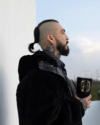

Mis Artistas Favoritos
Conoce màs acerca de Darihus!!!

Inicios en la vida de Dharius |
El Cartel de Santa (1999-2013) |
Dharius como solista |
2020: Todos En La Cuadra Bien Locos |
|---|---|---|---|
Dharius nació en Nuevo León, México. Comenzó su carrera en 1994, a los nueve años, cuando con su hermano Rodo y sus primos Fredo y Vhetto, formó el grupo Los Pattos, una de las primeras agrupaciones de rap de México. Con el grupo escribió sus primeras canciones y realizo varias primeras presentaciones. En 1996, el grupo grabó su primer demo, del cual se desprenden dos sencillos: Tierra Mexicana y Siento. Pese al éxito, el grupo se disolvió dos años después. |
En el año 1999 conoció a Babo, líder de la banda mexicana El Cartel de Santa, con quien estuvo trabajando intermitente hasta finalmente incorporarse al grupo en 2003. Con la agrupación, editó cinco álbumes, entre ellos: Vol. II de 2004, Volumen prohibido, disco de oro en 2006 y Vol. IV en 2008. Golpe avisa salió en 2014, un año después de su salida. Dharius estuvo catorce años con el grupo; su última composición fue Me Alegro de Su Odio. |
A fines de 2014, Dharius debutó como solista con el lanzamiento de su primer álbum Directo hasta arriba. El disco constaba de once temas inéditos, incluyendo el sencillo promocional Estilo Malandro, cuyo vídeo fue estrenado el 9 de diciembre de 2014. En la actualidad, el vídeo cuenta con más de 45 millones de reproducciones en You Tube. La Raja, Serenata Rap y La Vidha Loca (con Psycho Realm Sick Jacken), también fueron parte del álbum |
Después de casi dos años sin lanzamientos, Dharius estrenó el sencillo Espejismo el 30 de abril de 2020. Un mes después salió Todos En La Cuadra Bien Locos, sencillo que contaba con la colaboración de C-Kan, Gera MX, Santa Fe Klan y Neto Peña.La canción acumuló más de 4 millones de visualizaciones en YouTube en cuatro días siendo un gran éxito.Más tarde, ese mismo año, estrenó la canción El Clan Directo Hasta Arriba con Tiro Loko. Luego colaboró con Santa Fe Klan en Ojos Tumbados |